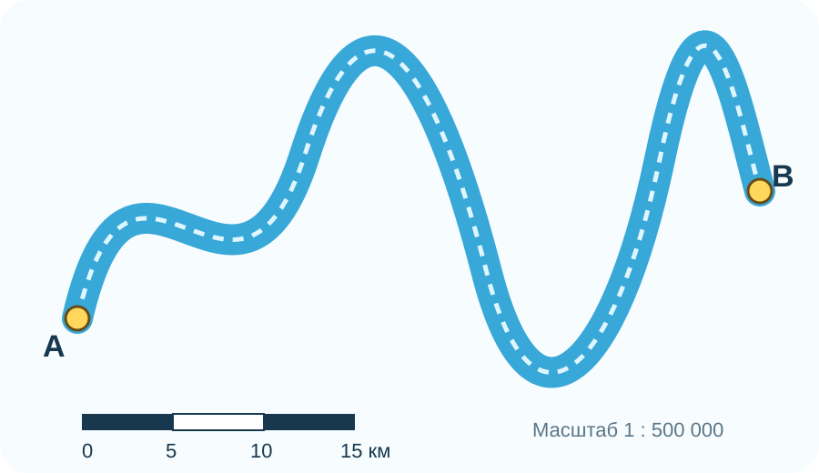
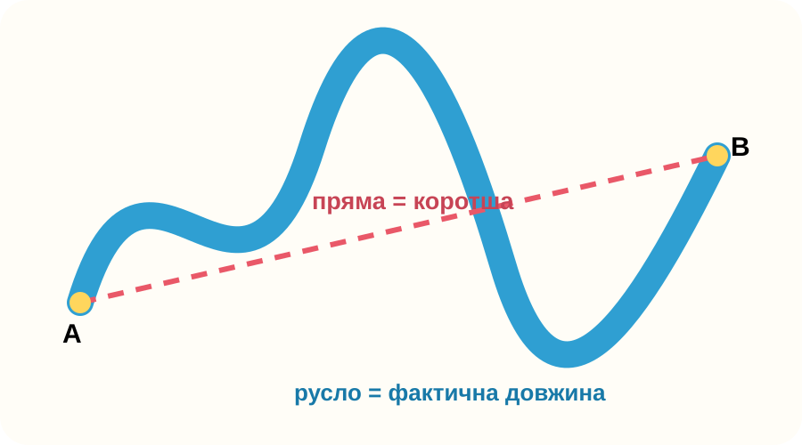
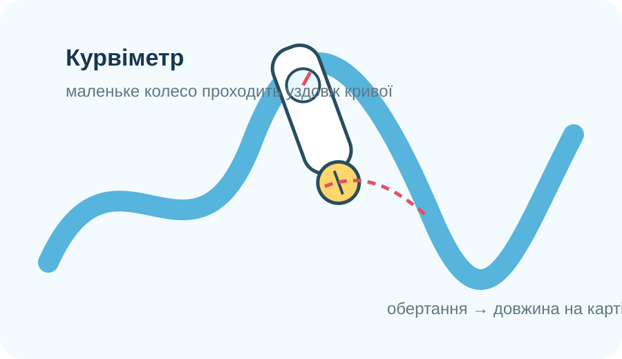
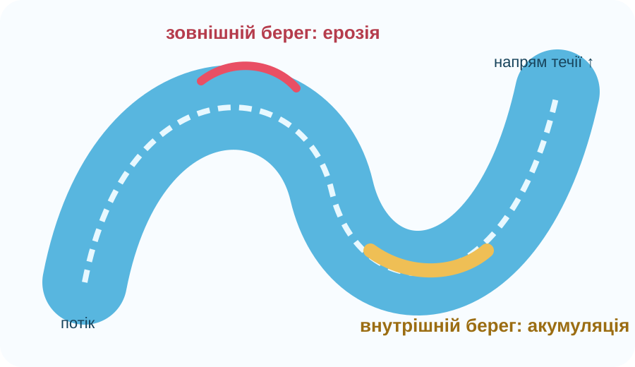

Ерозія
Розмивання й руйнування гірських порід та ґрунту текучою водою.
Звивиста річка майже завжди довша за пряму між витоком і гирлом. Сьогодні Ви виміряєте довжину русла двома способами, переведете сантиметри карти в кілометри, оціните похибку й лише потім поясните, як ерозія та акумуляція змінюють річку.

Локальна навчальна схема для вимірювання руслаНа карті від витоку A до гирла B по прямій — 8,0 см. Але русло робить багато вигинів. Масштаб карти — 1 : 500 000.

Клацайте по руслу від A до B. Чим більше точок на вигинах, тим точніше ламана наблизить криву.

Курвіметр має маленьке колесо. Коли Ви прокочуєте його вздовж кривої на карті, обертання колеса перетворюються на пройдену довжину.
Для масштабу 1 : N:
Отриманий результат спочатку буде в тих самих одиницях, що й вимір на карті. Якщо вимірювали сантиметри, для кілометрів треба поділити на 100 000.
Ставила точки лише на найбільших вигинах.
9,1 смВикористала багато точок і повторила дрібні вигини.
10,3 смКолесо пройшло вздовж осі русла.
10,5 см
Оберіть процес для кожної ділянки вигину.
На зовнішньому боці вигину вода розмиває берег, на внутрішньому — повільніша й відкладає осад.
Серія супутникових знімків 1989–2020 показує, як винесений річкою матеріал перебудовує узбережжя.
Колір води на супутниковому знімку допомагає простежувати відмінності у завислому осаді.
Відкрийте інтерактив NASA World of Change: Yellow River Delta і перемикайте роки 1989–2020. Це фактично коротка покадрова «відеоісторія» роботи річки, зібрана Landsat.
▶ NASA World of ChangeНазвіть одну зміну, що свідчить про акумуляцію, і одну причину, чому точна довжина русла на карті різних років може відрізнятися.
Розмивання й руйнування гірських порід та ґрунту текучою водою.
Річка переміщує розчинені речовини, дрібні завислі частинки й більші уламки.
Відкладання перенесеного матеріалу там, де здатність потоку його переносити зменшується.
На карті її визначають уздовж русла, а не прямою між кінцевими точками; результат залежить від масштабу й точності трасування.
Запитання відкриються лише після введення даних учня.